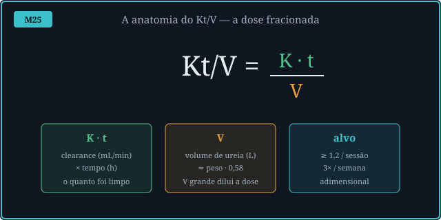
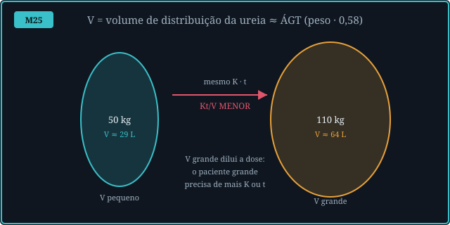
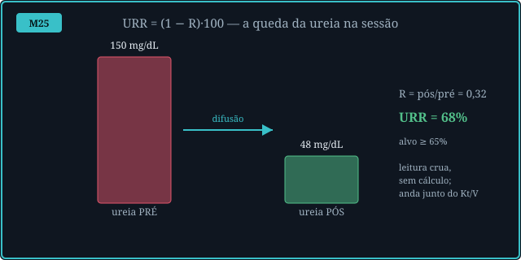
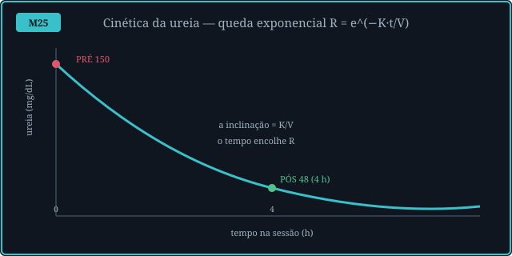
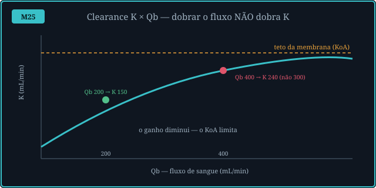
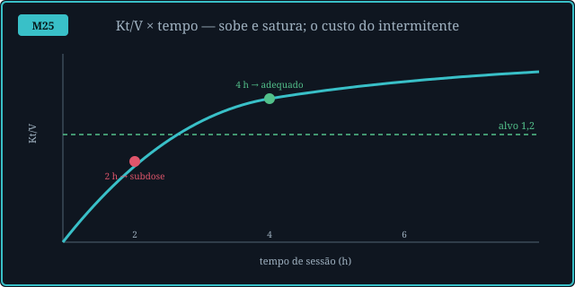
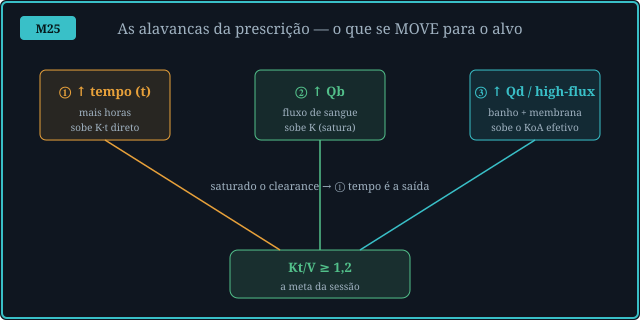
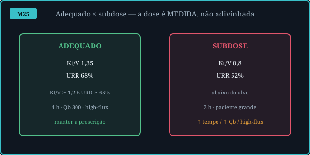

A dose de diálise não é "quanto tempo o paciente ficou na máquina" — é
quanto do volume de ureia foi efetivamente limpo. O Kt/V e o URR medem isso; a prescrição (tempo, Qb, Qd,
dialisador) é o que se ajusta para chegar ao alvo. As Fig. 1–8 voltam no Caso, na Trilha e na Avaliação.
Atribuição em CREDITS.md (em curadoria).
O Kt/V é adimensional: K (clearance, mL/min) × t (tempo, h) dividido por V (volume de distribuição da ureia, L ≈ peso·0,58). É "quantas vezes" o volume corporal de ureia foi depurado. O alvo é Kt/V ≥ 1,2 por sessão, 3×/semana. Um número que parece abstrato, mas é só a razão entre o que a máquina limpou e o tanque que precisava limpar.


O URR (urea reduction ratio) = (1 − R)·100, onde R = ureia_pós/ureia_pré. Se a ureia cai de 150 para 48 mg/dL, R = 0,32 e URR = 68% (alvo ≥ 65%). É a leitura mais simples — só duas dosagens de ureia — e anda junto do Kt/V: ambos derivam do mesmo R. São a mesma coisa por ângulos distintos.


O clearance K sobe com o fluxo de sangue (Qb), mas satura: a membrana tem uma capacidade (o KoA). Dobrar o Qb de 200 para 400 mL/min sobe K de ~150 para ~240 — não para 300. O ganho diminui. Por isso, num clearance já saturado, a alavanca eficiente passa a ser o tempo, não o fluxo.


Diante de uma subdose, a prescrição é o que muda: ① ↑tempo (sobe K·t direto), ② ↑Qb (sobe K, mas satura), ③ ↑Qd / dialisador high-flux (sobe o KoA efetivo). O motor sugere qual mover: com clearance saturado, tempo; com folga em Qb, Qb; com membrana low-flux, trocar o dialisador. A dose é prescrição, não sorte.
A exceção: a 1ª sessão muito urêmica. Aqui o alvo é rebaixado (gentil, ~0,9) — baixar a ureia rápido demais cria um gradiente osmótico sangue↔cérebro e causa síndrome de desequilíbrio (edema cerebral, M34/M26). É a única vez em que um Kt/V baixo é o correto.


Sala de hemodiálise. Cinco sessões, cinco prescrições. A pergunta de cada uma: a dose é adequada — e se não, qual alavanca mover? Volte às Fig. 5, 6 e 7: o clearance satura, o tempo é direto.
A dose fracionada de diálise: clearance K × tempo t sobre o volume de distribuição V da ureia. Adimensional — "quantas vezes" o volume corporal de ureia foi limpo. Alvo ≥ 1,2/sessão, 3×/sem.
URR = (1 − R)·100, com R = ureia_pós/pré. É a leitura crua (só duas dosagens) e anda junto do Kt/V: ambos saem do mesmo R. Alvo ≥ 65%.
Porque entra no numerador K·t. Dobrar o tempo (com K fixo) tende a dobrar K·t e subir o Kt/V de forma quase linear — é o custo e a virtude do intermitente: cortar o tempo corta a dose (M22).
Porque o clearance satura: a membrana tem capacidade (o KoA). K sobe com Qb mas curva para o teto. Qb 200→400 sobe K de ~150 para ~240, não para 300. O ganho marginal cai.
O KoA é a capacidade de transferência de massa da membrana. Um dialisador high-flux tem KoA maior → clearance maior para o mesmo Qb. É a alavanca ③ quando Qb e tempo já estão altos.
Porque V ≈ peso·0,58: o tanque de ureia é maior. O mesmo K·t rende um Kt/V menor — a dose é relativa ao volume. O grande precisa de mais clearance ou mais tempo.
Sim, no termo convectivo de Daugirdas: a ultrafiltração arrasta soluto junto com o solvente, somando um pouco ao Kt/V. Por isso a fórmula de 2ª geração corrige por UF/peso. O efeito é menor que o difusivo, mas real.
Pela fração de saturação do clearance (K/KoA efetivo). Saturado (≥0,7) → tempo. Com folga em Qb → Qb. Com membrana low-flux ou Qd baixo → dialisador/Qd. A dose é prescrição dirigida pelo mecanismo.
A diálise não substitui o rim: por difusão (e convecção, M19) remove escórias e devolve o meio interno à faixa. Mas só se a dose for atingida — uma subdose deixa a uremia residual. Medir a dose é garantir que a função foi de fato substituída.
Os controles do Lab movem este gráfico. Eixo horizontal = tempo de sessão (h); eixo vertical = spKt/V. A curva azul mostra como o Kt/V sobe e satura com o tempo, para o clearance e o V do paciente atual. A linha verde tracejada é o alvo 1,2; o marcador é a sessão atual (verde se acima do alvo, vermelho se subdose). Mais clearance (Qb/Qd/high-flux) levanta a curva inteira.
| Saída | Atual | Comentário |
|---|---|---|
| Clearance K · volume V | — | K (mL/min) · V (L ≈ peso·0,58) |
| Ureia pós · R | — | R = pós/pré (cinética) |
| spKt/V (sessão) | — | alvo ≥ 1,2 |
| URR | — | (1 − R)·100 · alvo ≥ 65% |
| Adequação | — | Kt/V E URR no alvo |
| Alavanca a mover | — | tempo · Qb · dialisador |